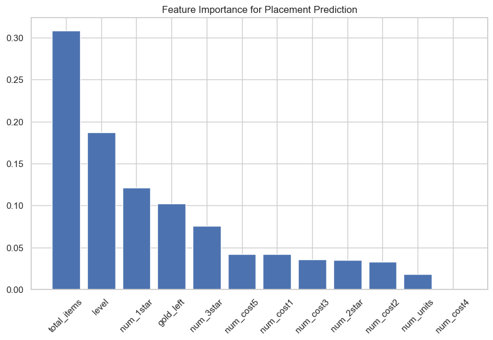

#Questions: Which game factors most strongly predict placement?
#Does investing in high cost unit affect placement?Supervised Learning
Instructions
Note: You should remove these instruction once you have read and understood them. They should not be included in your final submission.
Remember: Exactly what do you put on this page will be specific you your project and data. Some things might “make more sense” on one page rather than another, depending on your workflow. Organize your project in a logical way that makes the most sense to you.
Suggested page structure
Here’s one suggested structure for organizing your technical pages. You can adjust this as needed:
Audience:Remember that these are written for a technical audience. Assume they have completed the DSAN program, but would appreciate refreshers of the important concepts.
- Introduction and Motivation: Briefly outline your plan. What are you doing on this page, and why? Provide context and explain the goals of your analysis.
- Overview of Methods: Give a concise explanation of the methods used. For example, if using K-Means clustering, describe what it is, how it works, the inputs and outputs, and key hyperparameters.
- Code: Include the code you used to implement your workflow.
- Summary and Interpretation of Results: Summarize your findings, interpret the results, and discuss their technical implications.
What to address
The following is a list of some of the things you should address on this page. This list is not exhaustive, and you should use your judgment to decide what is most relevant to your project.
Please do some form of “Feature selection” in your project and include a section on it. Discuss the process you went through to select the features that you used in your model, this should be done for both classification models and regression models. What did you include and why? What did you exclude? What was the reasoning behind your decisions? This section can be included here, or you can make a new page in the dropdown menu for it.
Please break this page into a “regression” section, “binary classification” section, and a “Multi-class classification” section. For each case you should try multiple methods, including those discussed in class, and compare and contrast their preformance and results.
Data Preprocessing
- Normalization or Standardization: Apply techniques to scale the data appropriately.
- Feature Selection or Extraction: Identify and select the most relevant features for your analysis.
- Encoding Categorical Variables: Convert categorical variables into a suitable format for modeling.
Model Selection
- Model Rationale: Explain the reasons for selecting specific models or algorithms.
- Overview of Algorithms: Provide a brief overview of the algorithms used
Training and Testing Strategy
- Split Methods: Detail the splitting methods used (e.g., train-test split, cross-validation).
- Dataset Proportions: Specify the proportions used for splitting the dataset.
Model Evaluation Metrics
- Binary Classification Metrics: Discuss metrics such as accuracy, precision, recall, F1 score, and ROC-AUC.
- Multiclass Classification Metrics: Include metrics such as confusion matrix and macro/micro F1 score.
- Regression Metrics: Explain metrics such as RMSE, MAE, and R-squared, parity plots, etc.
Results
- Model Performance Summary: Provide a summary of the model’s performance.
- Visualizations: Include visualizations of results (e.g., ROC curves, feature importance plots).
Discussion
- Result Interpretation: Interpret the results obtained from the analysis.
- Model Performance Comparison: Compare the performance of different models.
- Insights Gained: Share insights learned from the analysis.
Code
Provide the source code used for this section of the project here.
If you’re using a package for code organization, you can import it at this point. However, make sure that the actual workflow steps—including data processing, analysis, and other key tasks—are conducted and clearly demonstrated on this page. The goal is to show the technical flow of your project, highlighting how the code is executed to achieve your results.
If relevant, link to additional documentation or external references that explain any complex components. This section should give readers a clear view of how the project is implemented from a technical perspective.
Remember, this page is a technical narrative, NOT just a notebook with a collection of code cells, include in-line Prose, to describe what is going on.
#import packages this file uses
import os
import re
import numpy as np
import pandas as pd
import ast
import matplotlib.pyplot as plt
import seaborn as sns
from scipy import stats
from sklearn.model_selection import train_test_split
from sklearn.ensemble import RandomForestRegressor
from sklearn.metrics import mean_absolute_error#Import singlar combined csv file from raw data step as a pandas df
dfTFT = pd.read_csv("../data/processed-data/TFT_processed-data.csv")
dfTFT.head(5)| match_id | puuid | placement | level | time_eliminated | total_damage | game_length | game_version | gold_left | traits | ... | total_items | Release_Version | total_traits | total_units | top1 | top4 | bottom4 | champions | raw_champions | champion_list | |
|---|---|---|---|---|---|---|---|---|---|---|---|---|---|---|---|---|---|---|---|---|---|
| 0 | NA1_5412752266 | zkxtkj27xwoevll2byguugjlpldforxw6vscn82z0s4m4w... | 8 | 9 | 1591.827148 | 40 | 2182.824219 | Linux Version 15.22.724.5161 (Nov 05 2025/16:1... | 1 | [{'name': 'TFT15_Bastion', 'num_units': 1, 'st... | ... | 13 | 15.22 | 14 | 9 | 0 | 0 | 1 | [] | ['TFT15_Aatrox', 'TFT15_DrMundo', 'TFT15_Vi', ... | ['Aatrox', 'DrMundo', 'Vi', 'Udyr', 'Sett', 'B... |
| 1 | NA1_5412752266 | 5brr3jrvsrxprqoi2u1vdib7uhyvqh9dbldf7a1dv9_uvw... | 1 | 9 | 2174.608154 | 173 | 2182.824219 | Linux Version 15.22.724.5161 (Nov 05 2025/16:1... | 61 | [{'name': 'TFT15_DragonFist', 'num_units': 1, ... | ... | 17 | 15.22 | 10 | 10 | 1 | 1 | 0 | [] | ['TFT15_Kayle', 'TFT15_Zac', 'TFT15_Aatrox', '... | ['Kayle', 'Zac', 'Aatrox', 'Gangplank', 'Udyr'... |
| 2 | NA1_5412752266 | ilqfyw7mnea2shfj5mvz4yhh6whmkrhoqa8m8otzxvtn71... | 6 | 9 | 1815.780273 | 80 | 2182.824219 | Linux Version 15.22.724.5161 (Nov 05 2025/16:1... | 0 | [{'name': 'TFT15_Bastion', 'num_units': 4, 'st... | ... | 11 | 15.22 | 9 | 10 | 0 | 0 | 1 | [] | ['TFT15_Ezreal', 'TFT15_Garen', 'TFT15_Rell', ... | ['Ezreal', 'Garen', 'Rell', 'Rakan', 'Caitlyn'... |
| 3 | NA1_5412752266 | yja8q8aza0xq_s9hebroe4adddezonw0abvoc5gprzgmqw... | 3 | 9 | 2032.849243 | 124 | 2182.824219 | Linux Version 15.22.724.5161 (Nov 05 2025/16:1... | 9 | [{'name': 'TFT15_Bastion', 'num_units': 2, 'st... | ... | 12 | 15.22 | 8 | 9 | 0 | 1 | 0 | [] | ['TFT15_Naafiri', 'TFT15_Lux', 'TFT15_XinZhao'... | ['Naafiri', 'Lux', 'XinZhao', 'Viego', 'Samira... |
| 4 | NA1_5412752266 | oubcpr6kdwc2r4zz_msa6ftlulg14fqnrjj9pglbs2z4on... | 5 | 8 | 1818.687256 | 84 | 2182.824219 | Linux Version 15.22.724.5161 (Nov 05 2025/16:1... | 41 | [{'name': 'TFT15_Bastion', 'num_units': 2, 'st... | ... | 13 | 15.22 | 7 | 8 | 0 | 0 | 1 | [] | ['TFT15_Ezreal', 'TFT15_Garen', 'TFT15_Syndra'... | ['Ezreal', 'Garen', 'Syndra', 'Rakan', 'Malzah... |
5 rows × 31 columns
#Only use Release Version 15.22
dfTFT = dfTFT[dfTFT["Release_Version"] == 15.22]#get the champion as list from from field units
def get_champions(unit_entry):
if isinstance(unit_entry, str):
unit_list = ast.literal_eval(unit_entry)
#remove the TFT15_ prefix
return [u["character_id"].split("_", 1)[1] for u in unit_list]
return []
dfTFT["champion_list"] = dfTFT["units"].apply(get_champions)
dfTFT["champion_list"].explode().unique()array(['Aatrox', 'DrMundo', 'Vi', 'Udyr', 'Sett', 'Braum', 'leesin',
'TwistedFate', 'Zyra', 'Kayle', 'Zac', 'Gangplank', 'Viego',
'Ashe', 'JarvanIV', 'Galio', 'Ezreal', 'Garen', 'Rell', 'Rakan',
'Caitlyn', 'Jayce', 'Neeko', 'Leona', 'Yuumi', 'Naafiri', 'Lux',
'XinZhao', 'Samira', 'Volibear', 'Gwen', 'Syndra', 'Malzahar',
'KSante', 'Lucian', 'Senna', 'Ryze', 'Karma', 'Yone', 'Kennen',
'Ahri', 'Swain', 'smolder', 'Kalista', 'Kobuko', 'Shen', 'Jinx',
'Poppy', 'Varus', 'Seraphine', 'Gnar', 'Xayah', 'Janna',
'Katarina', 'Smolder', 'Sivir', 'Malphite', 'Ziggs', 'KogMaw',
'Yasuo', 'rammus', 'Akali', 'Darius', 'kogmaw', 'Jhin', 'KaiSa',
'Rammus', 'Ekko', nan, 'lulu'], dtype=object)dfTFT.shape(32455, 31)#select the fields I want to use
#I did run time_eliminated,total_damage,game_length originally.
#They were most signifcant.
#Makes sense because the player who lasted the longest and dealt the most damage should wins.
fields = ["level",
"gold_left",
"total_items",
"num_units",
"num_1star",
"num_2star",
"num_3star",
"num_cost1",
"num_cost2",
"num_cost3",
"num_cost4",
"num_cost5"]
X = dfTFT[fields]
Y = dfTFT["placement"]#use train_test_split
X_train, X_test, Y_train, Y_test = train_test_split(
X, Y, test_size=0.2, random_state=42)#estimators = itteration. More increases run time, ran state, no depth means trees fully capture interactions
rf = RandomForestRegressor(n_estimators = 600, random_state = 1, max_depth = None)
rf.fit(X_train, Y_train)
pred = rf.predict(X_test)
mae = mean_absolute_error(Y_test, pred)
print("MAE:", mae)MAE: 1.1085405242013935#Despite omitted varaible bias, MAE is acceptable.#plot results to see which features are most significant
import numpy as np
import matplotlib.pyplot as plt
importances = rf.feature_importances_
indices = np.argsort(importances)[::-1]
plt.figure(figsize=(10,6))
plt.bar([fields[i] for i in indices], importances[indices])
plt.xticks(rotation=45)
plt.title("Feature Importance for Placement Prediction")
plt.show()
#DSQ2: Does investing in high-cost units (4-5) affect placement?
#use Ttest dfTFT[["num_cost4", "num_cost5", "placement"]].corr()
top4_4cost = dfTFT[dfTFT["top4"] == 1]["num_cost4"]
bot4_4cost = dfTFT[dfTFT["top4"] == 0]["num_cost4"]
stats.ttest_ind(top4_4cost, bot4_4cost)TtestResult(statistic=nan, pvalue=nan, df=32453.0)#TtestResult(statistic=nan, pvalue=nan, df=32453.0)
#Ttest is valid if Var = 0
print(top4_4cost.var())
print(bot4_4cost.var())0.0
0.0top4_5cost = dfTFT[dfTFT["top4"] == 1]["num_cost5"]
bot4_5cost = dfTFT[dfTFT["top4"] == 0]["num_cost5"]
stats.ttest_ind(top4_5cost, bot4_5cost)TtestResult(statistic=17.90027055298418, pvalue=2.5873532044523514e-71, df=32453.0)print(top4_5cost.mean(), bot4_5cost.mean())2.3569757419037063 2.144698698575217